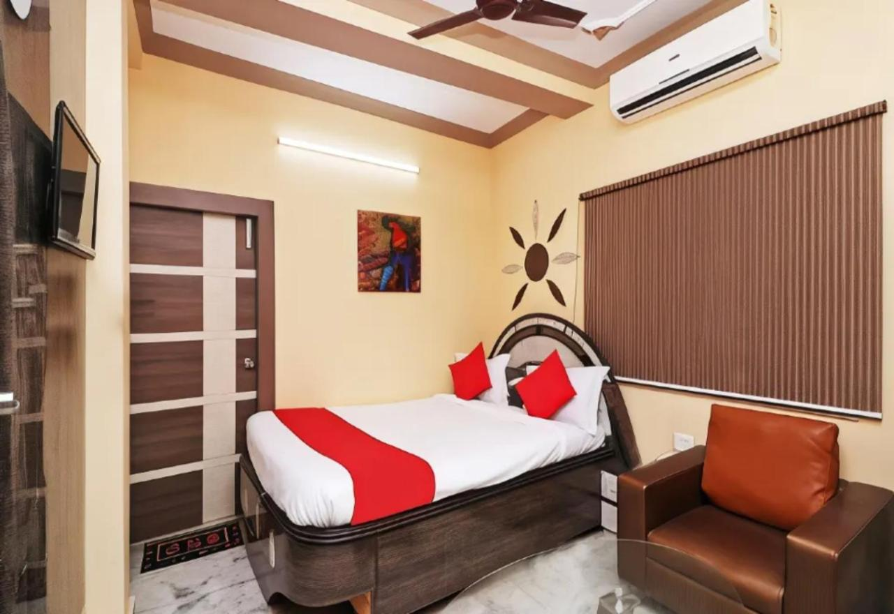

Fairfield by Marriott Kolkata
About
Located in Kolkata, 7.6 miles from Sealdah Train Station, Fairfield by Marriott Kolkata provides accommodations with free bikes, free private parking, a fitness center and a shared lounge..
HOTELS TO VISIT
Fairfield by Marriott Kolkata
About
Located in Kolkata, 7.6 miles from Sealdah Train Station, Fairfield by Marriott Kolkata provides accommodations with free bikes, free private parking, a fitness center and a shared lounge..
OYO Hotel Happiness Near Acropolis Mall
About
Park Street Metro Station is 5 miles from OYO Hotel Happiness Near Acropolis Mall, while Indian Museum is 5 miles away. The nearest airport is Netaji Subhash Chandra Bose International Airport, 12 miles from the accommodation.
ibis Kolkata Rajarhat - An Accor Brand
About
The rooms come with air conditioning, a flat-screen TV with cable channels, a coffee machine, a shower, a hairdryer and a desk. At the hotel rooms include bed linen and towels.
The daily breakfast offers buffet, continental or Italian options..

Goroomgo Sanjoy Guest House Ruby Tagore Park Kolkata
About
Park Street Metro Station is 4.4 miles from the accommodation, while Kalighat Kali Temple is 4.4 miles away. The nearest airport is Netaji Subhash Chandra Bose International Airport, 11 miles from Goroomgo Sanjoy Guest House Ruby Tagore Park Kolkata.

FabExpress Golden Stays
About
Park Street Metro Station is 1.8 miles from FabExpress Golden Stays, while Victoria Memorial is 2 miles away. The nearest airport is Netaji Subhash Chandra Bose International Airport, 11 miles from the accommodation.